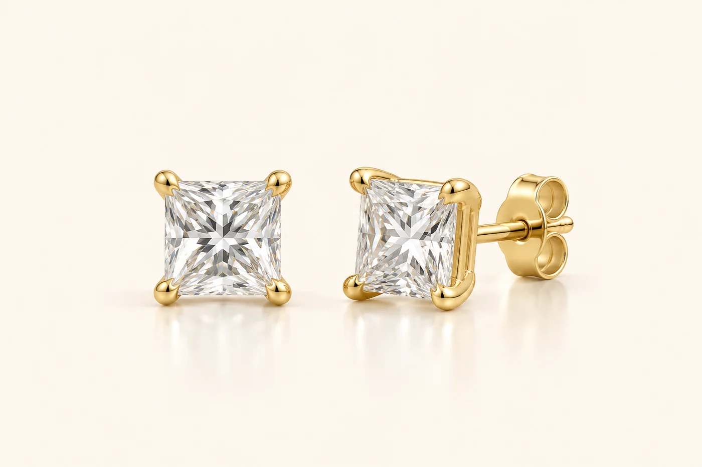

Aura · Bespoke enquiry
Princess Four-Prong Studs
Square princess-cut diamonds held by four corner prongs.
Discuss gold colour, diamond sizes and the setting with our atelier.
Enquire about this design
Aura · Bespoke enquiry
Square princess-cut diamonds held by four corner prongs.
Discuss gold colour, diamond sizes and the setting with our atelier.
Enquire about this design